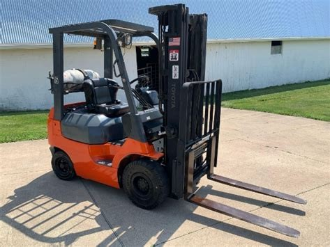
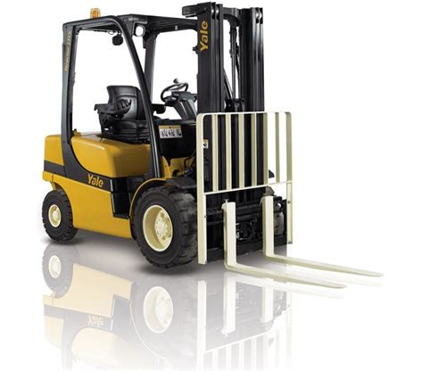
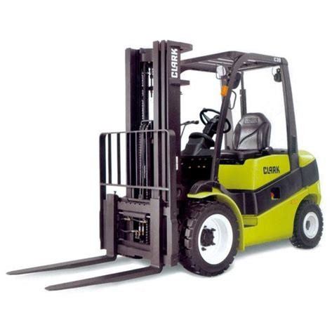

<- post precedente
post successivo->
Il carrello elevatore Toyota 7FGU15 è un modello a motore a combustione interna, con capacità di sollevamento di 1500 kg. Questo modello è dotato di un motore a benzina a 4 cilindri, con una potenza di 37 kW. Il carrello è in grado di sollevare carichi fino a 3 metri di altezza, e può raggiungere una velocità massima di 20 km/h. Il carrello è dotato di un sistema di trasmissione automatica, e di un sistema di frenata a disco. Il carrello è inoltre dotato di un sistema di sterzatura a 4 ruote
Il carrello elevatore Yale GLP20 è un'efficiente macchina progettata per soddisfare le esigenze di movimentazione dei carichi in diversi ambienti di lavoro, come magazzini, centri di distribuzione e siti di produzione. Dotato di una capacità di sollevamento di 2000 kg (circa 4400 libbre), questo modello offre una solida combinazione di potenza e manovrabilità. Il design ergonomico del Yale GLP20 si traduce in una maggiore comodità per gli operatori durante le operazioni di sollevamento e movimentazione dei carichi. La cabina è progettata con attenzione ai dettagli per garantire una visibilità ottimale e una facile accessibilità ai comandi, migliorando così l'efficienza e la sicurezza sul luogo di lavoro. Grazie alla sua affidabile trasmissione e al motore a combustione interna, il Yale GLP20 offre prestazioni consistenti e una manutenzione agevolata. I sistemi di controllo avanzati consentono agli operatori di gestire con precisione la velocità e la direzione del carrello, facilitando le manovre anche negli spazi ristretti. La robusta costruzione del Yale GLP20 garantisce una lunga durata e una resistenza agli impatti, rendendolo ideale per le sfide quotidiane dell'ambiente industriale. Con la sua versatilità e affidabilità, questo carrello elevatore Yale si dimostra un partner affidabile per ottimizzare le operazioni di movimentazione dei materiali.
Il Clark C25 è un carrello elevatore versatile e affidabile progettato per soddisfare le esigenze di movimentazione dei materiali in una vasta gamma di ambienti di lavoro, dai magazzini alle aree di produzione e di distribuzione. Con una capacità di sollevamento di 2500 kg (circa 5500 libbre), questo modello offre una potenza sufficiente per gestire carichi pesanti in modo efficiente. Dotato di un motore a combustione interna e una trasmissione robusta, il Clark C25 offre prestazioni consistenti e affidabili, garantendo una produttività ottimale sul luogo di lavoro. I comandi intuitivi e ergonomici consentono agli operatori di manovrare il carrello con facilità, migliorando l'efficienza e riducendo l'affaticamento durante le operazioni di sollevamento e movimentazione dei carichi. La cabina spaziosa e confortevole del Clark C25 è progettata per garantire una visibilità ottimale e un ambiente di lavoro confortevole per gli operatori. I sistemi di sicurezza integrati aiutano a proteggere sia gli operatori che il carico durante le operazioni di sollevamento e trasporto. Grazie alla sua costruzione robusta e alla manutenzione agevolata, il Clark C25 è progettato per garantire una lunga durata e una resistenza agli impatti, rendendolo ideale per l'uso quotidiano in ambienti industriali impegnativi. Con la sua combinazione di prestazioni affidabili, manovrabilità e comfort per gli operatori, il Clark C25 si conferma come una scelta eccellente per ottimizzare le operazioni di movimentazione dei materiali.
